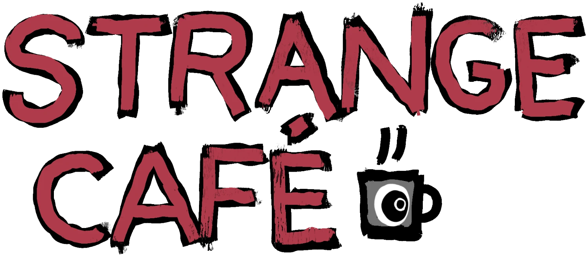

2,222 trolls, inscribed on bitcoin as children of the trollbox.
shielded on ord dropz. the art is public. who holds it is private.
every troll gets a line in the trollbox. write what you want. change it later, or switch it off before you sell. it goes in through the relay, so nobody can see who wrote it.